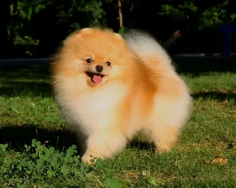

Всем привет
Немного о моей любимой собаке
Здесь я буду рассказывать о содержании померанского шпица, об уходе за ним, о его питании.
Содержание померанского шпица
Щенок требует очень много внимания. Именно общение с человеком позволяет ему легче
привыкнуть к изменившимся условиям, усвоить новые навыки, сохранить здоровье, а значит,
избежать сложностей во взрослой жизни. Щенок померанского шпица в 2 месяца нуждается не
только в уходе, но и в воспитании, начале дрессировки. Грань между этими понятиями поставить
трудно, одно совмещают с другим.
Содержание щенка предусматривает приучение к режиму кормления, отдыха, прогулок и ночного
сна. Эти моменты определяют физическое здоровье маленького померанца.
Современные кинологи советуют в этот же период позаботиться и о психическом здоровье щенка.
Для этого рекомендуется незамедлительно начинать воспитание:
- устанавливать границы дозволенного;
- знакомить с окружающим миром;
- учить понимать и выполнять некоторые команды;
- приучать к лотку, а затем и к физиологическим выгулам;
- вырабатывать привычку спокойно относится к гигиеническим процедурам.
Повседневный уход за померанским шпицем
Все об уходе померанского шпица


Плюсы породы
- чистоплотные, сами себя вылизывают, не пахнут псиной;
- они общительные, игривые, готовы поддержать любую забаву;
- легко обучаемы, способны усвоить любые команды, научиться любым трюкам;
- неприхотливые, легко уживаются в любых условиях;
Минусы породы
- любят лаять, имеют очень звонкий голос, их сложно успокоить;
- сильно линяют, сложно ухаживать за шерстью;
- очень активны, энергичны, без достаточных физических нагрузок могут пострадать предметы интерьера и вещи.